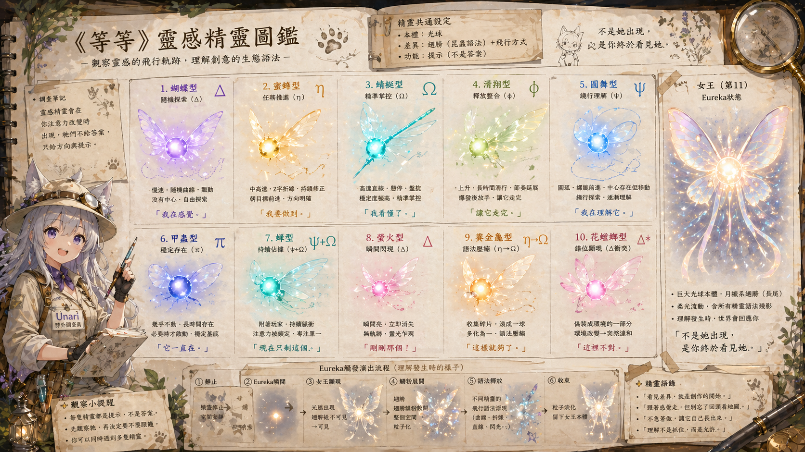

Book 02
等等靈感
在創作前停一下，辨識靈感從哪裡亮起，然後保護它成形的路徑。
靈感不是憑空降臨，而是某個差異終於亮起，吸住注意力，開始長成作品。
Core Flow
靈感成形路徑
- 差異亮起先看見第一個被注意力抓住的亮點。
- 被吸住辨識靈感黑洞，不急著解釋，也不急著拆掉。
- 判斷管線用十型靈感看它從哪種生成方式啟動。
- 轉譯成作品把模糊感轉成文字、圖像、角色、玩法或設定。
- 收進檔案庫把案例、圖騰、角色與世界觀種子留下來。
Field Guide
靈感精靈圖鑑

Book 02
在創作前停一下，辨識靈感從哪裡亮起，然後保護它成形的路徑。
靈感不是憑空降臨，而是某個差異終於亮起，吸住注意力，開始長成作品。
Core Flow
Field Guide
